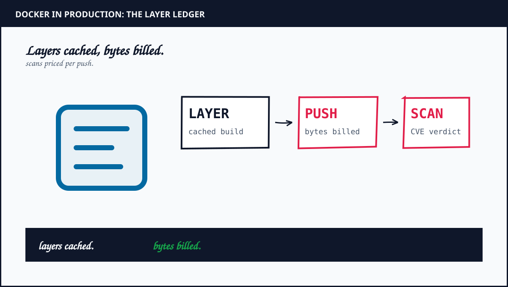

Docker Containers in Production: 15 Lessons From the Layer Ledger
Nine years of containers under deploy pressure taught me one discipline: layers cached, bytes billed, plus verdicts per push. Each lesson starts from a real production postmortem, states its assumptions up front, plus ends in math you can re-run. The bill hides in the boundary.
TL;DR: Fifteen Docker lessons with live diagrams, from layers to registries plus scans plus the Kubernetes handoff. Built from production postmortems with registry math.
By Mukul Kumar Mishra · Containers course · Updated September 30, 2026

What you will be able to do
- Read image ledgers, order Dockerfiles for cache hits, plus ship multi-stage builds a tenth of the size.
- Price registry pushes per node, pin digests for repeatability, scan every push with owners plus dates, plus keep secrets out of layers.
- Persist state in volumes, name networks before addresses, stream logs with trace IDs, plus gate rollouts with probes plus limits.
- Mirror prod in Compose, hand off cleanly to Kubernetes, plus ship one container with dashboards plus runbooks.
- Answer container interviews with layer math out loud, pull budgets second, plus rollback timings third.
How interviews test this course: layer math out loud first, security discipline second, handoff planning third. Lesson 15 ships the proof.
Image Layers
Assumption first: an image is a stack of immutable layers, not a box. Each instruction adds a layer. Identical layers share storage plus download once. Bloated layers download on every node forever. Read layer history before trusting any image. Bytes without ledgers compound silently.
- Inspect history plus sizes per layer. Mystery gigabytes usually hide in one RUN step.
- Prefer slim bases plus explicit versions. Latest plus full toolchains tax every pull.
- Deep dive: Replit Agent Runtime, sandbox images with install bills.
Q1. Image pulls take 4 minutes per node. Which layer dominates? Seen at: backend plus platform loops.
Q2. Two services share 80 percent of layers. What does the registry charge? Seen at: SRE plus platform loops.
Ledger read. Now order the file. Lesson 02: Dockerfile →
Dockerfile Order
Layer cache reuses every unchanged step plus rebuilds everything below the first change. Stable steps belong early. Churning source belongs last. Dependency manifests before code cuts rebuilds tenfold. Order without cache math rebuilds the world per commit.
- Count invalidated layers per typical commit. One early COPY can void a gigabyte of cache.
- Split dependency install from source copy. Manifests change monthly, code changes hourly.
- Deep dive: Lovable Preview, repeated installs without caches.
Q1. Builds rerun npm install on every commit. What two lines move? Seen at: backend plus full-stack loops.
Q2. Cache hit ratio sits at 20 percent. What reorder lifts it past 80? Seen at: platform plus SRE loops.
Order set. Now shrink the ship. Lesson 03: Multi-Stage →
Multi-Stage Builds
Build stages compile with full toolchains. Final stages carry binaries plus runtime only. A Go service drops from 900MB to 25MB when the compiler stays behind. Smaller images pull faster plus scan faster plus patch faster. Toolchains in production are freight, not features.
- Compare final size against binary size. Gaps above 5x mean toolchain rode along.
- Use distroless or slim final stages for static binaries. Shells in prod widen exploits.
- Deep dive: Cursor Token Postmortem, payloads priced per byte moved.
Q1. Node image ships at 1.2GB with a 60MB app. What stages fix it? Seen at: backend plus full-stack loops.
Q2. Distroless breaks debugging at 3 AM. What compromise holds? Seen at: SRE plus platform loops.
Ship shrunk. Now price the push. Lesson 04: Registry →
Registry Bills
Registries charge storage plus data transfer per pull. Every node pulls every image on deploy plus scale plus restart. A 1GB image across 200 nodes moves 200GB per rollout. Retention without lifecycle rules stores every experiment forever. Pull math decides image budgets.
- Multiply image size by node count by deploys per month. That product is the invoice.
- Set lifecycle rules for dev tags plus keep release tags pinned. Infinite retention is slow debt.
- Deep dive: Vercel Fluid Bill, waiting billed by the same math.
Q1. Two hundred nodes pull 800MB ten times daily. What is the monthly transfer? Seen at: platform plus SRE loops.
Q2. Registry stores 4,000 untagged dev images. What policy clears them? Seen at: SRE plus backend loops.
Pushes priced. Now pin the tag. Lesson 05: Tags →
Tags Versus Pins
Mutable tags move under deploys while digests freeze bytes forever. Latest in production means unrepeatable incidents plus undebuggable rollbacks. Pin digests in manifests plus promote tags through environments. Repeatability without pins is luck with YAML.
- Count deploys that cannot name their bytes. Each is an incident without a suspect.
- Resolve tags to digests at deploy time plus record them. Promotion carries hashes, not hopes.
- Deep dive: Lean Proof Check, pin versions plus recheck outside.
Q1. Latest redeploys a broken build at midnight. What pinning prevents repeat? Seen at: SRE plus platform loops.
Q2. Rollback must restore exact bytes. What artifact names them? Seen at: backend plus SRE loops.
Bytes frozen. Now scan them. Lesson 06: Scans →
CVE Scans
Scanners grade every layer against vulnerability feeds on each push. Critical CVEs block promotion while high ones ticket with dates. Unscanned bases accumulate forbidden packages silently. Scan gates without owners become ornamental red. Verdicts need humans with dates.
- Track mean time from CVE publish to patched deploy. Weeks of lag are exposure with dashboards.
- Rebuild bases monthly plus fail closed on scanner outage. Silent skips ship holes.
- Deep dive: ChatGPT Channel, boundaries priced per leak.
Q1. Base carries 12 critical CVEs. What rebuilds first? Seen at: platform plus security loops.
Q2. Scanner goes dark Friday. Do pushes proceed? Seen at: SRE plus security loops.
Verdicts filed. Now guard secrets. Lesson 07: Secrets →
Secrets Discipline
Baked secrets live in layers forever, readable by anyone with pull access. Build args plus env files leak through history plus inspect. Inject secrets at runtime from vaults plus mount short-lived tokens. Rotation without rebuilds proves the design.
- Audit history plus inspect output for key shapes. One match means rebuild plus rotate.
- Scope tokens per service plus expire hourly. Broad forever-keys are breach multipliers.
- Deep dive: Agentflayer Heist, one document out plus keys with it.
Q1. Key appears in layer history. What are the first three moves? Seen at: security plus backend loops.
Q2. Service needs DB passwords at boot. What delivers them? Seen at: platform plus SRE loops.
Keys safe. Now persist data. Lesson 08: Volumes →
Volumes
Containers lose writable layers on restart by design. Volumes persist databases plus uploads plus caches outside the box lifecycle. Binds suit dev files. Named volumes suit prod data. Backups cover volumes, not containers. State without volumes is amnesia with uptime.
- Size volumes from growth rate times retention. Full disks halt writes before alerts wake you.
- Separate data volumes from log volumes. Shared fate fills both together.
- Deep dive: Doltgres Data Loss, backups must hold data.
Q1. Database container restarts nightly plus loses rows. What persists them? Seen at: backend plus SRE loops.
Q2. Volume fills at 2 AM. What alerts before writes halt? Seen at: SRE plus platform loops.
Data kept. Now wire the network. Lesson 09: Networks →
Networks Are DNS
Compose plus overlay networks give each service a DNS name. Hardcoded IPs rot on every reschedule. Publish only edge ports plus keep east-west traffic on internal networks. Exposed databases invite the internet to dinner. Names scale, addresses expire.
- Count published ports per host. Each is an attack surface with a number.
- Isolate tiers on separate networks. Flat networks let breaches wander.
- Deep dive: etcd Handshake, silent connections billed per socket.
Q1. Service reaches DB by container IP. What breaks on reschedule? Seen at: backend plus platform loops.
Q2. Which ports stay published on a three-tier app? Seen at: SRE plus security loops.
Names wired. Now free the logs. Lesson 10: Logs →
Log Discipline
Stdout plus stderr stream to collectors while files inside boxes die with restarts. JSON lines with trace IDs join logs to requests. Unbounded logs fill disks plus drown signals. Rotation plus sampling keep the stream affordable. Debugging without centralized logs is archaeology.
- Budget log bytes per request times RPS. Verbose debug at peak is a second bill.
- Sample health plus debug logs at 1 percent. Keep 100 percent of errors.
- Deep dive: MoEngage Millisecond, write-heavy discipline.
Q1. Logs fill the node disk weekly. What three knobs stop it? Seen at: SRE plus backend loops.
Q2. Trace a failed checkout across six services. What joins the lines? Seen at: backend plus platform loops.
Stream flowing. Now gate rollouts. Lesson 11: Health →
Healthchecks Gate Rollouts
Health endpoints tell orchestrators when to send traffic plus when to restart. Liveness restarts the stuck. Readiness gates the unready. Startup guards slow boots. Missing probes promote broken boxes with full traffic. Truth needs endpoints, not hopes.
- Time p99 startup plus add headroom for thresholds. Hair triggers flap healthy boxes.
- Separate liveness from readiness strictly. Shared probes restart the merely busy.
- Deep dive: Discord Voice Herd, checks outran grace.
Q1. Deploys send traffic before warmup ends. Which probe fixes it? Seen at: SRE plus backend loops.
Q2. Liveness kills busy workers mid-request. What separates the signals? Seen at: platform plus SRE loops.
Truth gated. Now sign contracts. Lesson 12: Limits →
Resource Limits Are Contracts
CPU shares plus memory limits turn noisy neighbors into budgeted tenants. Requests reserve scheduling. Limits cap bursts. OOM kills punish the limitless first. Unbounded boxes tax every neighbor at 3 AM. Contracts keep the host honest.
- Size requests from p50 plus limits from p99 with headroom. Guesses become evictions.
- Set JVM plus runtime heaps below container limits. Unaware runtimes invite the killer.
- Deep dive: NATS Four Hours, capacity with human cost.
Q1. One box starves twelve neighbors at peak. What contract fixes it? Seen at: SRE plus platform loops.
Q2. OOM kills the payment worker nightly. Requests or limits move? Seen at: backend plus SRE loops.
Contracts signed. Now match environments. Lesson 13: Compose →
Compose for Dev Parity
Compose files declare the same services plus networks plus volumes developers run locally. Parity kills works-on-my-machine before review. Override files carry dev-only ports plus volumes. Drift without linting returns within a quarter. Mirrors need wiping schedules.
- Diff dev versus prod configs monthly. Each unexplained delta is a future incident.
- Pin dev image digests weekly. Floating dev tags hide integration breaks.
- Deep dive: Stripe Ledger Scale, exactness as discipline.
Q1. Bug reproduces in prod but never locally. What differs first? Seen at: backend plus full-stack loops.
Q2. Dev compose drifts quarterly. What automation pins it? Seen at: platform plus SRE loops.
Mirrors clean. Now hand off. Lesson 14: Handoff →
Kubernetes Handoff
Docker packages plus Kubernetes schedules: registries feed clusters, probes become pod checks, limits become requests, Compose services become Deployments. Handoff checklists carry digests plus secrets paths plus health endpoints. Rework without a list repeats every lesson expensively.
- Verify every Compose service has a Deployment plus Service plus limit before migration week.
- Migrate stateless first plus stateful last. Data moves slower than boxes.
- Deep dive: Kubernetes Course, fifteen on-call lessons.
Q1. Move twelve Compose services to a cluster. What migrates first? Seen at: platform plus SRE loops.
Q2. Probes differ between Compose plus pods. What maps to what? Seen at: SRE plus backend loops.
Handoff mapped. Now ship it. Lesson 15: Capstone →
Ship One Container
Capstone: containerize one service in four weeks. Week one shrinks the image plus pins digests. Week two wires probes plus limits plus logs. Week three scans plus rotates secrets plus rehearses rollback. Week four ships with dashboards plus runbooks. Graduates carry pulls, not slides.
- Exit criteria: pulls under 30 seconds plus zero critical CVEs plus rollback timed plus bill shown.
- Present registry cost before plus after. Savings fund the next migration.
- Deep dive: Kubernetes Course, the orchestration companion.
Q1. Cut our image pulls from 4 minutes to 30 seconds. Show the plan. Seen at: platform plus SRE loops.
Q2. Rollback drill missed its window. What ships Monday? Seen at: SRE plus platform loops.
Course complete. Start the companion. Kubernetes Course →